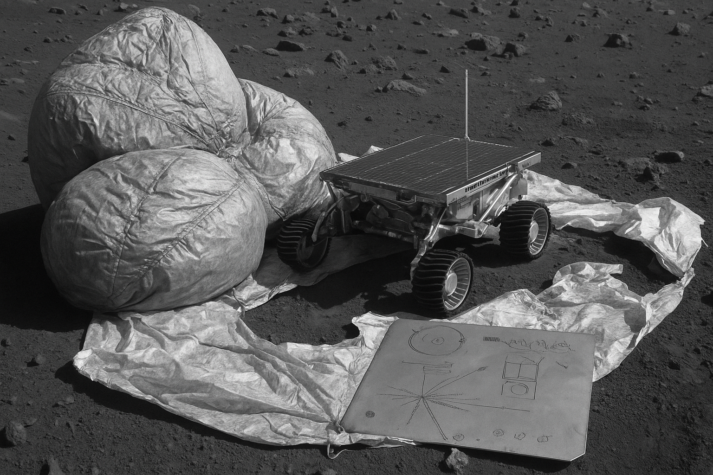

Mars Pathfinder
Agencia: NASA
Fecha de lanzamiento: 4 de diciembre de 1996
Duración: 85 días (operación principal)
Tipo de misión: Aterrizaje + rover en Marte
Objetivo: Demostrar tecnologías para aterrizajes económicos en Marte y recolectar datos científicos de la superficie
Carga científica: Estación fija (Pathfinder) con sensores meteorológicos, y el rover Sojourner con cámaras, espectrómetro APXS y sensores de navegación
Impacto histórico
Mars Pathfinder marcó el regreso exitoso de EE.UU. a Marte tras el fracaso de misiones anteriores. Fue la **primera misión en desplegar un rover en otro planeta**, captando la atención del público mundial. Demostró la viabilidad de enviar exploradores robóticos de bajo costo a Marte y recopiló datos sobre composición de rocas, clima y polvo marciano. Sentó las bases tecnológicas y científicas para las futuras misiones como Spirit, Opportunity y Curiosity.
Mensaje interestelar
Aunque Mars Pathfinder no portaba un disco interestelar como las Voyager, fue **el primer mensaje moderno de retorno exitoso desde Marte** en la era digital. Sus transmisiones y fotografías fueron recibidas por millones en todo el mundo, convirtiéndose en una forma simbólica de comunicación entre planetas.
⬅ Regresar a Misiones No Tripuladas